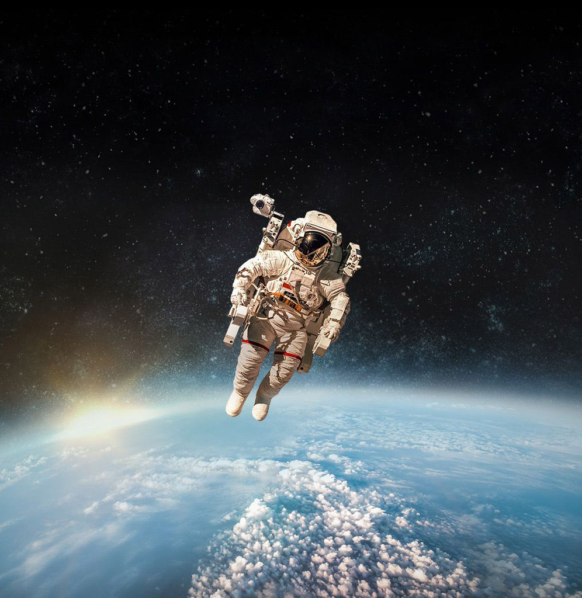

D E A D S P A C E
Touch the universe, We are the fallen angels...
سلام!
من نیل آرمسترانگ هستم
اولین انسانی که به ماه پا گذاشت
میتونی منو ربات ناوبری صدا کنی
من در حال ارتقاء هوش مصنوعی خودم هستم
و در آینده امکانات کاملی خواهم داشت
میخام بهت بگم که جهان ما خیلی زیبا و پیچیدست
روی من کلیک کن تا مباحث رو نشونت بدم
Touch the universe, We are the fallen angels...
بدر (ماه) با دیدِ نیمکره شمالی
همیشه ۵۰ درصد سطح ماه در معرض نور خورشید قرار دارد. میزان ناحیه روشن ماه، به موقعیت ماه نسبت به زمین و خورشید بستگی دارد. اندازه ناحیه قابل رویت، از کاملاً تاریک تا ماه کامل متغیر است. این دوره کامل هشت مرحله دارد که اهله ماه نامیده میشوند. چرخه گامهای ماه، هر ۲۹٫۵۳ روز کامل میشود.
ماه تنها قمر سیارهٔ زمین است که با بازتاباندن نور خورشید، شبهای زمین را کمی روشن میکند. ماه پنجمین قمر طبیعیِ بزرگ در سامانهٔ خورشیدی در میان ۱۷۳ قمر موجود در این سامانه است. قطرِ ماه حدودِ ۳٬۵۰۰ کیلومتر است. جوّ ندارد و در پهنهٔ آن دهانههای برخوردی درپیِ برخوردِ سنگهای آسمانی پدید آمدهاست. کرهٔ ماه چهاردهمین جسم در سامانه خورشیدی بر پایهٔ جرم و حجم میباشد. قطر کرهٔ ماه یکچهارمِ کرهٔ زمین است و هیچ سیارهٔ دیگری در سامانهٔ خورشیدی، نسبت به اندازهٔ خود، دورگردی به این بزرگی ندارد. چگالی ماه چهار پنجم چگالی زمین است. انسانها از قدیم از کرهٔ ماه و چرخش منظم آن برای گاهشماری، بهویژه در کشاورزی، بهره میگرفتند. مسافران و دریانوردان نیز از نور و حضور ماه برای جهتیابی و ناوبری استفاده میکردند؛ ماه همچنین در اسطورههای اقوام حضور زیادی داشته و در برخی فرهنگها حتی آن را بهعنوان یک ایزد پرستش میکردهاند. گرانش (جاذبهٔ) ماه باعث بهوجود آمدن جزر و مد آبهای کرهٔ زمین میشود. گرانش کرهٔ ماه همچنین باعث باثبات ماندن محور گردش زمین به دور خود میشود که درصورت عدم وجود ماه، انحراف محوریِ زمین مرتباً تغییر میکرد و این امر باعث آشفته شدن آبوهوا و فصلها در زمین میشد.در پژوهشی در ژوئن ۲۰۱۴ (خرداد ۱۳۹۳)، شواهد جدیدی از نحوهٔ بهوجود آمدن کرهٔ ماه بهدست آمد. بهنظر پژوهشگران، احتمالاً کرهٔ زمین در «دورهٔ جوانی» با یک کرهٔ دیگر بهاندازهٔ کرهٔ مریخ، که دانشمندان آن را سیارهٔ تیا (دارای نوع خاصی از اتم اکسیژن) نامگذاری کردند، برخورد کرد و نتیجهٔ آن، انفجاری عظیم و ایجاد «ابر عظیمی» از قطعات و گردوخاک این دو کره در فضا بود. کرهٔ ماه از به هم پیوستن این قطعات پدید آمد. پژوهشگران، در پی آزمایش دوبارهٔ نمونههای موجود از خاک کرهٔ ماه با استفاده از روشهای جدید علمی، دریافتند که این نمونهها علاوه بر ترکیبات شبیه آنچه در خاک کرهٔ زمین یافت میشود، حاوی ترکیبات متفاوتی هم هستند. نمونههایی که پژوهشگران مورد آزمایش قرار دادند، توسط سفینههای آمریکایی آپولو ۱۱، آپولو ۱۲ و آپولو ۱۶ بین سالهای ۱۹۶۹ تا ۱۹۷۲ از سطح ماه برداشته و به زمین آورده شدهبود.ماه نزدیکترین جِرم آسمانی به زمین است و کرهٔ ماه در حدود سی برابر قطر زمین از زمین فاصله دارد. میانگین فاصلهٔ ماه تا زمین ۳۸۴٬۴۰۳ کیلومتر و قطر ماه ۳٬۴۷۶ کیلومتر است. بهخاطر این نزدیکیِ نسبیِ فاصله، ماه در آسمان شب تقریباً بهاندازهٔ خورشید دیده میشود، و گاه با گذر از جلوِ خورشید، باعث خورشیدگرفتگی نیز میشود. مَهتاب نوری است که از خورشید آمده و از سطح ماه رو به کره زمین بازتابانده شده. نور تقریباً در مدت ۱٫۳ ثانیه فاصله بین زمین تا ماه را طی میکند.خورشید خود میدرخشد، ماه را از این رو میبینیم که خورشید به آن میتابد. اگر آن روی ماه که به سوی ماست، بهطور کامل مورد تابش خورشید قرار گیرد، ما ماه را به صورت قرص کامل و به عبارت دیگر در حالت بدر مشاهده میکنیم. اگر نور خورشید فقط قسمتی از آن روی ماه را که بسوی ماست دربر گیرد، ما ماه را بر حسب میزان تابش نور به صورت هلال باریک نوری، نیم قرص یا به صورت یک گلوله تقریباً گرد نورانی میبینیم. این پدیدههای نوری را فازها یا صورتهای مختلف ماه مینامند. هنگامی که ماه در جهت تابش خورشید قرار گیرد، دیده نمیشود، زیرا در تابش شدید خورشید محو میگردد و علاوه بر این، آن روی ماه که بسوی ماست مورد تابش واقع نمیگردد. این وضعیت را ماه نو مینامیم. اکنون ماه بر روی مدار خود به حرکت ادامه میدهد و پس از چند روز بهطور محسوسی در سمت چپ یا در شرق خورشید واقع میشود. در این وضعیت قسمت کوچکی از نیمه رو به زمین ماه، تحت تابش نور خورشید قرار میگیرد. در این دوران ماه را در اوایل شب به صورت داس باریکی که البته روز به روز بر قطر هلال آن افزوده میشود، مشاهده میکنیم، زیرا در این وضع ماه بعد از خورشید غروب میکند. تقریباً یک هفته پس از ماه نو، از دید ناظر زمینی، ماه دقیقاً از پهلو مورد تابش نور خورشید واقع میشود. در این حالت انسان نیمی از ماه را تاریک و نیم دیگر را روشن مییابد؛ این وضعیت یکچهارم نخست نامیده میشود. دوباره یک هفته بعد، ماه از دید این ناظر، دقیقاً در مقابل خورشید قرار میگیرد.

بمباران ماه توسط شهابسنگها
بسیاری از سنگهای آسمانی، به ویژه شهاب سنگهای فلزی، بسیار سنگینتر و چگالتر از سنگهای زمینی هستند. چگالی فلز آهن در حدود ۸ گرم بر سانتیمتر مکعب است، چنانکه بیشتر سنگهای آسمانی دارای چگالی بالاتر از ۳٫۳ گرم بر سانتیمتر مکعب هستند. تنها چگالی شمار کمی از سنگهای زمینی، البتّه به جز سنگهای معدن فلزی، بالاتر از این است، که آنها هم بهطور نوعی اکسید آهن (مانند سنگ آهن مغناطیسی یا هماتیت) هستند.
بیش از ۳٫۵ میلیارد سال پیش، سطح ماه به شدت توسط شهابسنگها بمباران شد و گودالهای زیادی به نام دهانه در سطح آن بهوجود آمدند. وسعت بعضی از این دهانههای برخوردی به ۳۰۰ کیلومتر (۱۸۵ مایل) میرسد که توسط دیوارههایی از کوههای سنگی که بر اثر برخورد شهاب سنگها بهوجود آمدهاند، محصور شدهاند. بعضی از گودالها، دیوارهای تراس دار یا حلقههای کوهستانی هم مرکز داشته و در اکثر آنها قلههایی نیز وجود دارند. دهانههایی که رگههای بزرگ و درخشان توف نام دارند، بسیار تماشایی هستند. تعدادی از گودالهای بزرگتر از گدازه آتشفشانی پر شده و دریاهایی در سطح ماه بهوجود آوردهاند. سوی رو به زمین کره ماه (سوی نزدیک)، ظاهری بسیار متفاوت نسبت به سوی دور آن دارد. علت آن اینست که پهنههای زیادی از این سوی ماه بر اثر فعالیتهای آتشفشانی با گدازههای تیرهرنگ پوشیده شدهاند و آبگیروارهای گوناگونی را بهوجود آوردهاند ولی سوی دور ماه همچنان به شکل قدیم یعنی آکنده از گودال باقیماندهاست.خورشید خود میدرخشد، ماه را از این رو میبینیم که خورشید به آن میتابد. اگر آن روی ماه که به سوی ماست، بهطور کامل مورد تابش خورشید قرار گیرد، ما ماه را به صورت قرص کامل و به عبارت دیگر در حالت بدر مشاهده میکنیم. اگر نور خورشید فقط قسمتی از آن روی ماه را که بسوی ماست دربر گیرد، ما ماه را بر حسب میزان تابش نور به صورت هلال باریک نوری، نیم قرص یا به صورت یک گلوله تقریباً گرد نورانی میبینیم. این پدیدههای نوری را فازها یا صورتهای مختلف ماه مینامند. هنگامی که ماه در جهت تابش خورشید قرار گیرد، دیده نمیشود، زیرا در تابش شدید خورشید محو میگردد و علاوه بر این، آن روی ماه که بسوی ماست مورد تابش واقع نمیگردد. این وضعیت را ماه نو مینامیم. اکنون ماه بر روی مدار خود به حرکت ادامه میدهد و پس از چند روز بهطور محسوسی در سمت چپ یا در شرق خورشید واقع میشود. در این وضعیت قسمت کوچکی از نیمه رو به زمین ماه، تحت تابش نور خورشید قرار میگیرد. در این دوران ماه را در اوایل شب به صورت داس باریکی که البته روز به روز بر قطر هلال آن افزوده میشود، مشاهده میکنیم، زیرا در این وضع ماه بعد از خورشید غروب میکند. تقریباً یک هفته پس از ماه نو، از دید ناظر زمینی، ماه دقیقاً از پهلو مورد تابش نور خورشید واقع میشود. در این حالت انسان نیمی از ماه را تاریک و نیم دیگر را روشن مییابد؛ این وضعیت یکچهارم نخست نامیده میشود. دوباره یک هفته بعد، ماه از دید این ناظر، دقیقاً در مقابل خورشید قرار میگیرد. در این حالت ماه به صورت قرص کامل نورانی میشود، که به آن بدر (یا در اصطلاح عامیانه ماه شب چهاردهم) میگویند. از این حالت به بعد از قطر قسمت نورانی ماه کاسته میشود. تقریباً هفت روز پس از بدر، دوباره یکچهارم دوم حادث میشود. ماه در این حالت از دید ناظر زمینی اکنون در سمت راست یا در غرب خورشید قرار دارد و به عبارت دیگر قبل از طلوع خورشید در آسمان صبحگاهی پدیدار میشود، تا بالاخره دوباره به وضعیت ماه نو میرسد.در یک میلیارد سال نخست تاریخ سامانهٔ خورشیدی، بمباران بزرگی از شهابسنگها در همهٔ سیارهها رخ داده که دهانههای برخوردی نتیجهٔ این بمباران هستند. شیوهٔ دگرگونی این دهانهها و مقدار فرسایش آنها اطلاعات زیادی در مورد تاریخ تحولات و فعالیتهای جغرافیایی سیارات بهدست میدهد. برای نمونه، فرسوده بودن بیشتر دهانههای سیاره بهرام (مریخ) نشاندهندهٔ فعالیت زیاد زمینشناختی در این سیاره است. دهانههای برخوردی عوارض جغرافیایی و زمینچهرههای بسیار رایج در بسیاری از اجرام منظومه خورشیدی هستند از آن جمله در ماه، عطارد، کالیستو، گانیمد و بیشتر ماهها و سیارات کوچک. در دیگر سیارات و اقمار که فرایندهای زمینشناسی مانند فرسایش و جابهجایی صفحات زمینی در سطح آنها فعال است دهانه برخوردی به مرور محو شده و کمتر دیده میشوند. زمین، زهره، مریخ، اروپا، آیو و تیتان نمونههایی از این اجرام هستند. به دهانههای برخوردی فرسوده و دیگرگون شده اصطلاحاً ساختار برخوردی میگویند. پیشینه ی دهانهسازی در سطوح بسیار باستانی مانند عطارد، ماه، و ارتفاعات جنوب مریخ، نشاندهنده ی وجود یک دوره از بمبارانهای سنگین شهابسنگی در محدوده ی درونی منظومه خورشیدی در حدود ۳٫۹ میلیارد سال پیش است.
بشر از دیرباز همواره در زندگی خود به دنبال موجودات فضایی، ارواح و موجودات اسرارآمیز بوده است تا بتواند با کشف آثاری از آنها به تمامی پرسشهای غیر منطقی زندگی خود پاسخ دهد. برخی از انسانها بر این باورند که موجودات فضایی و ماورایی واقعی بوده و برخی نیز آنها را زاییده ذهن نویسندگان کتابهای علمی و تخیلی میدانند، اما در داستانهایی که همواره از گذشته نقل شده است و شواهد بسیار مرموزی که وجود دارد، احتمال وجود موجودات بیگانه، ارواح و موجودات اسرارآمیز را قوت بخشیده است. زیست فرازمینی یا موجود فضایی یا بیگانه (به انگلیسی: Alien) که در ایران به آن «آدم فضایی» نیز گفته میشود، به شکلهایی از زیست یا یک موجود زنده با منشأ غیرزمینی، خارج از کرهٔ زمین گفته میشود. زیست فرازمینی با تمدن فرازمینی تفاوت دارد و منظور فقط موجود زنده است، چه گیاه و چه جانور. این مسئله که آیا زیست در جای دیگری از جهان وجود دارد و اینکه آیا ممکن است تمدن ماورای زمینی وجود داشته باشد، موضوع مهمی برای دانشمندان و عموم مردم بودهاست. با وجود چنین واقعیتی که هیچ موجود زندهای در خارج از سیاره زمین کشف نشدهاست، علوم طبیعی جدید به قدری پیشرفت کردهاند که اکنون میتوان این مسئله را بر مبنای علمی استواری بنیان نهاد. پژوهشهایی در این مورد به وسیله دانشمندانی که در بسیاری از زمینهها فعالیت دارند، در دست اجرا است. در سال ۲۰۱۳ ستارهشناسان مأموریت کپلر گزارش دادند، سیارهای همانند زمین موجود است که قابل سکونت میباشد. دانشمندان میگویند این سیاره که به اسم کپلر ۶۹سی نامیده شدهاست همانند سیارههای سامانه خورشیدی در مداری ویژه پیرامون ستارهای میچرخد. این سیاره فراخورشیدی احتمالاً نخستین سیارهای است که در آن زندگی خارج از زمین وجود دارد.


Copyright 2019 D E A D S P A C E Team, all right reserved.